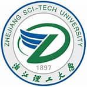
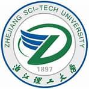

WangChangshen
 > > |
硕士研究生 |
关于我
我目前在浙江理工大学机械工程学院攻读硕士学位。 本人将于2023年6月从浙江理工大学机械工程学院获得硕士学位。在此之前, 我于2020年6月在*****获得了学士学位, 专业排名:(***)。
我的研究兴趣主要包括: 图神经网络,机器学习,图像识别等。
教育经历
|  | 硕士 浙江理工大学 (2020.9 ~ 2023.7)
|
|
> |
硕士研究生 |
我目前在浙江理工大学机械工程学院攻读硕士学位。 本人将于2023年6月从浙江理工大学机械工程学院获得硕士学位。在此之前, 我于2020年6月在*****获得了学士学位, 专业排名:(***)。
我的研究兴趣主要包括: 图神经网络,机器学习,图像识别等。
|  | 硕士 浙江理工大学 (2020.9 ~ 2023.7)
|